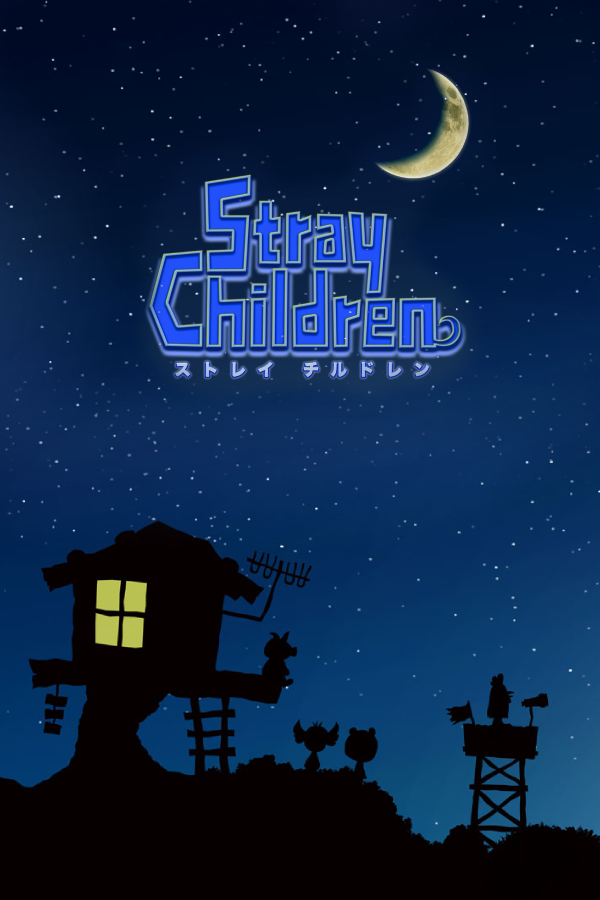

Stray Children
Every archived year-end list appearance, including placement and points earned.
About the Game
From the creators of beloved cult-classic videogames including Moon: Remix RPG Adventure, Chulip, and Rule of Rose, comes Stray Children: a bittersweet fairy tale adventure that will change the way you think about “children” and “adults”.What would you do if all the adults you know suddenly started attacking you?This is the story of children who try to survive and thrive in a world just like this, every day of their lives. Somewhere, in our world, there’s a secret room, in a secret place, filled top to bottom with ancient technology. When one young boy flips the switch on a curious old console, they’re suddenly whisked away, through the screen, into a very strange somewhere else: a long-since forgotten role playing game.Blinking awake in this peculiar new place, they find themselves in a land of children.Outside this stronghold’s walls lurk The Olders: monstrous adults, carrying the heavy load of their own inadequacies, self-doubt, and all of the grievances that grown-ups gather. Rumor has it that these creatures are starving for something, and that — out there — no one and nowhere is safe.Can you survive in this world where half-crazed adults lurk around every corner?It’s here — in this funny, mysterious, and wildly dangerous domain — that your story begins.As you explore the world of Stray Children, you’ll do turn-based battle with these oddball Olders, where you can choose to fearlessly fight or use your words as weapons, landing a crushing blow with just a well-worded whisper. Deftly dodge the relentless barrage of their bottled-up emotions, and discover the source of their strange stories. By touching their heart with your words, you might just be able to save their souls.What other mysteries await you in this weird new world? Find out in Stray Children — an unfamiliar place, with all-too-familiar troubles. We hope you’ll have fun discovering all the secrets of Stray Children, but we have one final request for anyone and everyone who finishes the game: please keep the ending a secret!
| Released | 2025-10-30 |
|---|---|
| Developer | Onion Games |
| Publisher | Onion Games |
| Genres | Action, Adventure, RPG, Indie |
| Platforms | PC |
SingleplayerSteam AchievementsFull controller supportRPGStory Rich2DFantasyPixel GraphicsAction RPGControllerRetroDark Fantasy
Where to Buy
Game information provided by RAWG.
Points by Year
List History
| Year | Source | List | Placement | Points |
|---|---|---|---|---|
| 2025 | WayTooManyGames | Top 20 Best Games of 2025 | 9 | 5 |